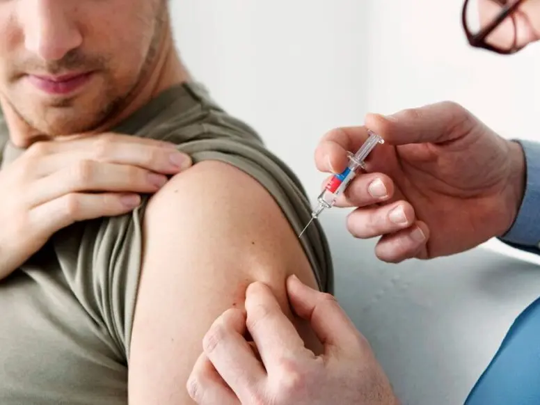

+380(97) 369 76
65
+380(97) 369 76
65Кодирование от алкоголизма в Одессе
Кодируем при любой стадии алкогольной зависимости.
Работаем в Одессе, Киеве, Львове, Харькове, Днепре, Запорожье, Черноморске, Каменском


Бесплатная консультация, работаем круглосуточно 24/7
Кодируем при любой стадии алкогольной зависимости.
Работаем в Одессе, Киеве, Львове, Харькове, Днепре, Запорожье, Черноморске, Каменском
Кодирование от алкоголизма Одесса - это процедура которую проводит врач нарколог с целью сформировать у зависимого пациента физическое и психологическое отвращение к любым спиртным напиткам. Суть кодирования направленно на длительное а иногда и абсолютное, пожизненное прекращение приема какого либо алкоголя. Задача наркологов медицинского центра UmbrellaPlus “Безопасная наркология” в Одессе не только в том что бы ввести пациенту медикаментозную кодировку от алкоголя тем самым сделав на физическом уровне невозможный прием спиртного, но и сформировать у зависимого сильную мотивацию для создания долгосрочного природного самостоятельного отвращения любому алкоголю.
Кодирование от алкоголизма - это наркологическая процедура, где доктор вводит препарат для кодирования, который вызывает сильнейшую токсическую реакцию в случаи если зависимый человек примет спиртное, очень часто сильный токсический эффект при срыве может закончиться госпитализацией в реанимационное отделение или даже летальным исходом. Таким образом под страхом смерти удается создать у пациента временное отвращение к спиртному на психологическом уровне.
Препарат для кодировки это один из ингибиторов фермента ацетальдегиддегидрогеназы который взаимодействуя с этим ферментам в печени, прекращает процесс распада этилового спирта до углекислого газа и воды уже на стадии ацетальдегида,а он является токсином для всех тканей в организме. Накопление ацетальдегида организме , человека который употребляет алкоголь под воздействием кодировки вызывает немедленную острую интоксикацию по типу аллергии. Эта интоксикация всегда сопровождается неприятной симптоматикой и болезненными ощущениями, такими как “приливы” крови к лицу, тошнота, рвота, общее недомогание, сердцебиение , пониженное артериального давления, паралич дыхательных мышц с возможным летальным исходом, а также риск развития инфаркта миокарда на фоне сильного гипертензивного криза.
Наркологическая служба UmbrellaPlus “Безопасная наркология” предлагает проверенные методы кодирования от алкоголя которые хорошо воздействуют на психологический аспект зависимого и блокируют любую тягу к Кодупотреблению спиртного. Самая сильная кодировка от алкоголя считается хирургическая подшивка эспераля. Так же есть другие варианты кодирования такие как:
При кодировании от алкоголя с помощью инъекции врач нарколог вводит пациенту укол с дисульфирамом или эспералем под лопатку. Так же есть модифицированный метод кодирования от алкоголя который является усиленной версией обычного укола под лопатку так как он делается под лопатку и в вену. Укол от алкоголизма является базовым методом при лечении алкогольной зависимости так как имеет высокую эффективность в лечении алкоголизма и обладает низкой токсичностью , печень пациента очень хорошо переносит кодирование. К плюсам кодирования от алкоголизма уколом можно отнести так же низкий уровень противопоказаний.
Горячий укол от алкоголизма - это модифицированный метод кодирования от алкогольной зависимости с помощью укола от алкоголизма о котором говорилось выше. Горячий укол от алкоголизма - это эспераль который вводится под лопатку и в вену , обладает характерным ощущением “жара” при введении а так же в сравнении с дисульфирамом имеет более очищенную формулу вещества и легче переносится зависимым человеком. Горячий укол от алкоголизма стали использовать примерно с 2010 года , он хорошо проявил себя в США , Норвегии , Франции и Австралии. В странах Европы при лечении алкоголизма предпочитают Эспераль а не американский Дисульфирам.
Провести процедуру кодирования от алкогольной зависимости можно в медицинском центре UmbrellaPlus “Безопасная наркология” в Одессе и Черноморске. Так же пройти кодирование от алкоголя можно на дому если пациент отказывается ехать в наркологический центр. Кодирование от алкоголизма в Одессе является анонимной процедурой и не идет в реестры Украины. Перед кодированием от алкоголизма пациент подписывает согласие на проведение специфического лечения зависимости а после укола доктор выдается справку с печатью об успешном прохождении лечения. Если у вас появилась потребность закодироваться в Одессе - вам нужно позвонить по номеру 050-021-69-57 и проконсультироваться с врачом наркологом.
Кодирование от алкоголизма можно пройти в медицинских центра, включая наркологические клиники и частные наркологические кабинеты. Наркологи предлагают медикаментозные и психотерапевтические методы кодирования от алкогольной зависимости. Частные реабилитационные центры в Одессе также могут предоставлять услуги лечения и кодирования от алкогольной зависимости. Самый лучший способ в кодирования от алкоголизма это скомбинированная психиатрическая и медикаментозная терапия для создания стойкого отвращения к спиртным напиткам. Медицинский центр UmbrellaPlus “Безопасная наркология” предлагает квалифицированную помощь в лечении алкоголизма и качественное кодирования от алкогольной зависимости с полным сохранением анонимности больного.
На данный момент в Одессе существует несколько медицинских учреждений которые оказывают услугу по кодированию от алкоголизма одним из трех основных вариантов:
Одним из медицинских центров Одессы и Черноморска является UmbrellaPlus “Безопасная наркология” мы уже много лет занимаемся лечением алкогольной зависимости , выводим из запойных состояний на дому или в стационаре а так же кодируем от алкогольной зависимости. Что бы проконсультироваться с врачом наркологом по поводу кодирования от алкоголизма в Одессе - вам нужно позвонить по номеру 050-021-69-57, доктор нарколог ответит на все ваши вопросы.
Основные методы кодирования от алкоголизма принято делить на две группы.
Кодирование от алкоголизма с помощью медикаментозной терапии, сюда относим:
Вторая группа это кодирование от алкоголя с помощью влияния врача на психологический аспект зависимости.
Кодировка от алкоголизма является самым хорошим методом на первых шагах в лечении зависимости но стоит помнить что сама болезнь (алкоголизм) это хроническое заболевание которое не удается вылечить до конца , если пациент уходит в запои и у него есть синдром опохмеление и желания опохмелиться по утрам - такому пациенту показана абсолютная пожизненная трезвость и никак иначе. Помните что кодировка от алкоголизма это только инструмент с которого начинается трезвость , инструмент с которым пациенту легче держаться на первых этапах в лечении алкоголизма. Для длительной ремиссии или же пожизненной трезвости пациенту показана психотерапия для полной проработки ложных убеждений в пользу зависимости а так же осознания самого аспекта алкоголизма. Только пройдя должное лечение от вывода из запоя до кодировки от алкоголизма с психотерапией можно добиться качественной пожизненной трезвости!
Стоимость кодирования от алкоголизма в Одессе начинается от 3999грн и может меняться в зависимости от метода, срока и препарата для кодирования.
| Услуга | Цена |
|---|---|
| Лечение алкоголизма Одесса | От 1499 грн |
| Вывод из запоя Одесса | От 1499 грн |
| Вывод из запоя на дому Одесса | От 1699 грн |
| Капельница от алкоголя Одесса | От 1499 грн |
| Капельница от алкоголя на дому Одесса | От 1699 грн |
| Лечение пивного алкоголизма Одесса | От 1499 грн |
| Лечение женского алкоголизма Одесса | От 1499 грн |
| Кодирование от алкоголизма Одесса | От 3999 грн |
| Кодирование уколом Одесса | От 3999 грн |
| Кодирование от алкоголизма уколом Дисульфирам | От 3999 грн |
| Кодирование от алкоголизма уколом Эспераль | От 5500 грн |
| Подшивка от алкоголя Одесса | От 9999 грн |
| Кодирование по методу Довженко Одесса | От 14999 грн |
Таблетки от алкоголизма наркологи используются в комплексном лечении алкогольной зависимости которые уменьшают тягу к алкоголю и снижают вероятность срыва. Существуют несколько препаратов для кодирования от алкоголизма с помощью табелток - это дисульфирам , эспераль , акампросат .Такие препараты назначаются только врачами наркологами и требуют постоянного приема для формирования качественной ремиссии. Помните что такой метод кодирования от алкоголизма является мало эффективным так как зависимый пациент может просто не принять препараты.
Анонимно

"Дуже довго не міг самостійно позбавитися залежності, тому зважився на підшивку. Процедура пройшла успішно, і з того часу я навіть не думаю про спиртне. Страх перед можливими наслідками допомагає триматися на плаву, а підтримка фахівців – величезна підмога у цьому нелегкому шляху. Центр надає як фізичну, а й моральну допомогу. Вдячний їм за другий шанс."
Анонимно
"Решила сделать укол от алкоголизма по рекомендации подруги, которая проходила эту процедуру в этом же центре. Я сомневалась, но врачи всё объяснили, успокоили. После укола не чувствую тяги к алкоголю, хотя раньше сложно было представить день без выпивки. Сейчас наслаждаюсь трезвостью, чувствую себя намного лучше."
Анонимно
"Я никогда не думал, что психологическое воздействие может настолько сильно повлиять на мою жизнь. Врач помог осознать всю серьезность ситуации, и теперь алкоголь не вызывает у меня никакого интереса. Процедура безопасна и эффективна, рекомендую тем, кто хочет по-настоящему изменить свою жизнь."
Анонимно
"Я прошла кодирование гипнозом, и это было удивительное переживание. Во время сеанса я почувствовала глубокое расслабление, а потом – будто внутри что-то изменилось. Сейчас я свободна от алкоголя и наслаждаюсь этим состоянием. Благодарю центр за профессионализм и заботу! Отдельная благодарность Станиславу Вячеславовичу"
Анонимно
"Чесно кажучи, боявся рецидиву, але з процедури минуло півроку, і я навіть не думаю про випивку. Життя почало змінюватися на краще. Дякуємо лікарям за підтримку та мотивацію!"
Анонимно
"Після багаторічної боротьби із залежністю вирішила звернутись в клінку. Спочатку переживала, але лікарі дуже докладно розповіли про процес та можливі наслідки. Зараз я не п'ю вже 8 місяців і почуваюся чудово. Я така щаслива, що знайшла цей центр і знайшла контроль над своїм життям."
Анонимно
"Метод Долженко казался мне странным, но я решил попробовать. Оказалось, что это не просто кодировка, а глубокая работа с психикой. Это позволило мне кардинально изменить отношение к алкоголю. Уже год я не пью, и не планирую возвращаться к прежней жизни. Простое человеческое спасибо!"
Анонимно
"Гипноз помог мне избавиться от постоянной тяги к алкоголю. После сеансов я заметила, что стала спокойнее и увереннее в себе. Теперь алкоголь меня больше не интересует. Центр мне очень помог, и я благодарна за их заботу и поддержку."
Приезд в течении 60 минут от момента поступления заявки
Наши филиалы есть во всех больших городах Украины.
Мы оказываем профессиональную доказательную медицинскую помощь. Гарантией является наше имя.
Номер телефона:
+380 (97) 369 76 65
+380 (50) 021 69 57
Адрес главного офиса: г. Харьков ул. Сумская 47
Офис вашего города нужно уточнить
Работаем в: Одессе, Киеве, Львове, Харькове, Днепре,
Запорожье
Telegram: t.me/umbrellaplus
График работы: Круглосуточно